The Climb, floors 31 to 50: one floor at a time
2026-11-16. The user: "make agents that will go slowly through all tower floors and one by one check all things that are done and correct them". This page is the second of the two agents: chapters IV (the Deep) and V (the War). Floors 1 to 30 are on their own page.
How each floor was checked (a dev server of its own, the game page in a hidden browser, time stepped by hand):
- Played through by the route bot (
_worldRoute, pipeline/tools/world-tool.js) as Lyra: every quest taken, done and handed in, the race, every waystone, cache and the lore stone, the trial, the ruler and the gate; any error in the page is counted. - Walked on paper: a flood fill of the floor from the camp (
_worldCheck): every person, pack, quest spot, cache, door and stone must be reachable; and the busiest spot (most enemies within a pack's sight). - Props against the ground as drawn (
climb-props-probe.js): things in the air, light under one side, through cover, on walkable ground and the edge; and anything small standing on a cliff face (climb-grass-probe.js). - Looked at: the camp, every person up close and their card, every pack standing and fighting, the doors and the lore stone, the big map (M), the ruler, the gatekeeper and the trial; the camp, the map and a card on a phone (390 x 844, touch).
- Read: every name and line of the floor against the lore (docs/lore/LORE.md and docs/lore/codex/, the Climb's chapters and The Long Noon).
- Frames: a rough frame time at the camp and in the busiest fight (the machine is shared with other agents: only clear outliers count).
For you: what I did not change
Bigger things, things in files another agent is working in, and matters of taste. Each with where it shows and what I would do.
- The trial rooms carry the old Tower's number (floors 31 to 50, and likely the other chapters' too): the far wall says VIII on floors 31 to 35, IX on 36 to 40, X and XI in the War, the weekly Tower's height each trial was tuned at, while the title says "Trial of floor 31". The room is drawn by the set pieces' code (
src/tower/world/pieces/duels.tsstartTrial->weekly, andsrc/arenas/tower.tsroomFloor, which writesroman(n)). What I would do: keep the height for the fight, and write the floor's own number on the wall (or none). Picture: floor 31's entry. - Who holds the gates: the codex says Opaline holds the Deep's gate and Oblivion the War's. They do on floors 31 and 41; on the generated floors other heroes hold it (32 Pip, 33 Mortis, 34 Cantor, 35 Hank, 36 Gus, 37 Vitriol, 38 Auriel, 39 Bo, 40 Anka; 42 Sirix, 43 Nyx, 44 Gus, 45 Hank, 46 Shiori, 47 Anka, 48 Tempo, 49 Mum, 50 Mabel). Either the codex says "the first floor's gate", or the gates follow the codex. Your call.
- The rival can be the hero you play: a player who climbs as Lyra meets "I am Lyra" on floor 32 and duels a Lyra. The same on any floor whose rival is the player's hero. What I would do: when the rival is the player's own hero, the floor takes the next hero on a fixed list (the floor's packs and doors stay as they are).
- People's marks over the HUD (all floors, most on a phone): the people's marks (the "!" and the name over each person) are on layer 7, over the floor's panel (6) and the spell bar (6), so a person who walks under them on screen is drawn on top (floor 34: over "The Black Water / In the light"; floor 36: over the W key). The exact fix, in
src/tower/world/hud.ts(another agent's file this round): the marks'z-index:7(line 217) ->z-index:5, under every panel and still over the world and the law's flood. The minimap was raised over them on floor 32 (map.ts). Pictures: floors 34 and 36.
Floor 31 · The Lightless Deep (Chapter IV opens)
Played through (three runs): cleared with four stars in 905 to 986 s of game time, no lives lost, no errors. In one run of the three the bot stood still for 45 s while carrying the last great shard, then went on; not seen in the other two, so not a spot that holds everyone. All four quests (the Three Crystals, the Pale One, the Lost Lantern, the Survey Lamp), the race with Tempo, six waystones, six caches, the lore stone, the Dark Vault, the Prism Mother and Opaline at the gate: every one done. Reachable: all 43 spots of the floor. Props: nothing new in the air or through cover on walkable ground (the gold keystone 20 m up and the stalactites were looked at in the props pass and left). Frames: about 7 ms at the camp, 9 ms in the busiest fight (five enemies), one spike as the packs woke.

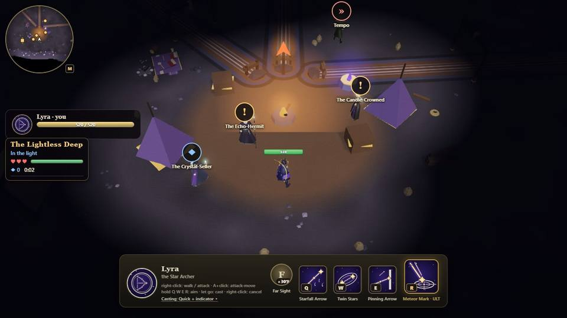


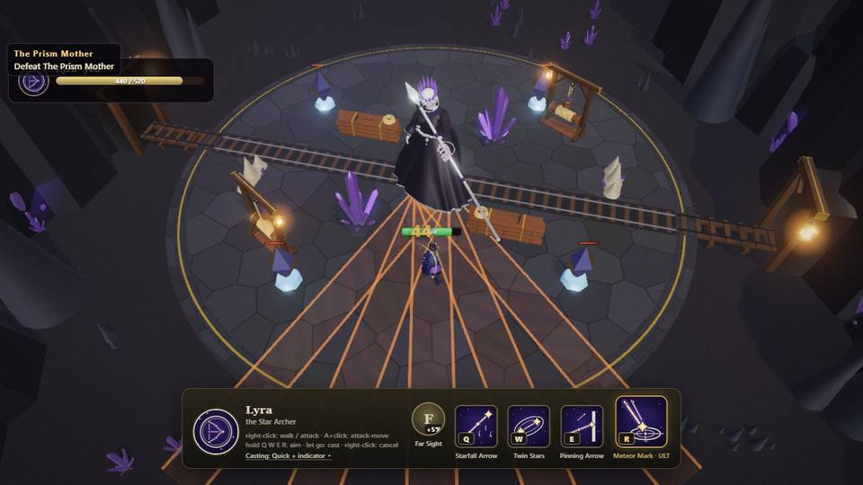

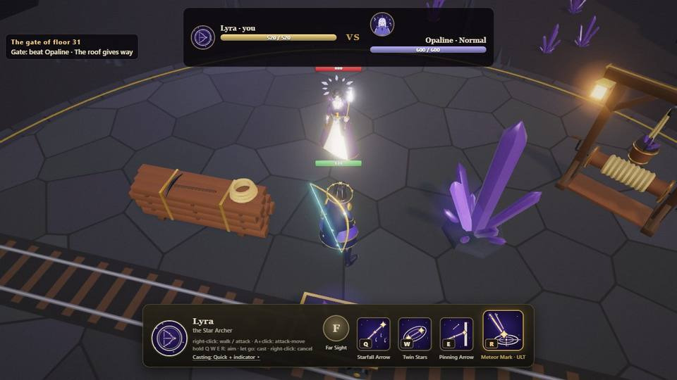

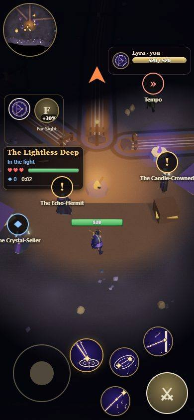
Fixed
- The big map's names covered each other (all floors): by the camp, "The Dark Vault", "The gate up" and "The lamp camp" were written over each other, and on a phone "The black landing" ran off the map's edge. A name now steps a line down or up when it would cover one already written, and stays inside the map (
src/tower/world/map.ts, the shared map: only where names are written changed).

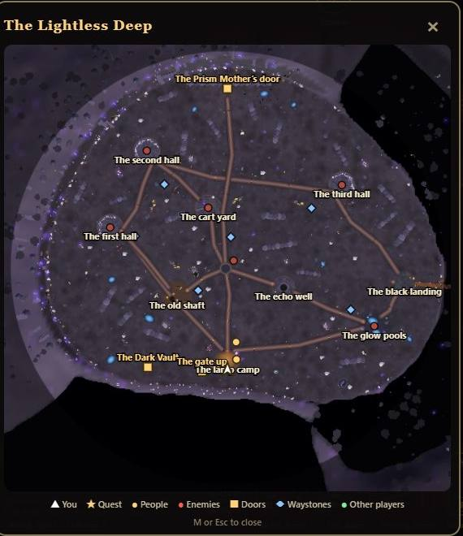


The same change on the other chapters' first floors (1, 11, 21, 41), on a phone: every name by its mark. On floor 21 the raiders' gate's name was cut by the map's top edge; it now stays inside.


- The Candle-Crowned's greeting was still Isolde's: "Without light I am only a cold woman in a cave", said under a crown of burning candles. Now: "I lost my lantern, and my satchel with it. My candles light my own face and nothing more. Perhaps you can fetch them." (
src/tower/world/folk.ts, floor 31's own line, the way floors 11, 21 and 41 already have theirs.)

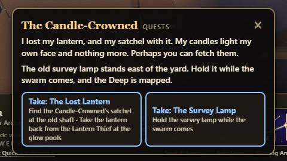
Looked at, not faults
- The trial (the Dark Vault, a gauntlet in the dark) has no spell bar: a gauntlet is a run to the stairs, as in the weekly Tower.
Left (in the list for the user)
- The trial room (the Dark Vault) has "VIII" carved on its far wall: the old weekly Tower's height its fight was tuned at, not the floor's number. The title says "Trial of floor 31". The room is the set pieces' code (not mine to change in this round).

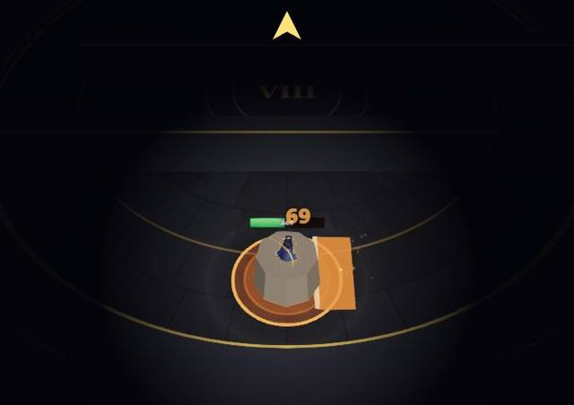
Floor 32 · The Amethyst Seam
Played through: cleared with four stars in 1247 s of game time, no lives lost, nothing stuck, no errors: the Three Crystals (three halls cleared, three shards carried, three crystals woken, the rock fall), the Hollow Foreman and Old Pick, the Lost Lantern, the Survey Lamp, Bring Tobin Up, the duel in Lyra's gallery, six waystones, six caches, the lore stone, the Ore Cellar, the Hollow Queen and Pip at the gate. Reachable: all 53 spots. Read: the names and lines fit the Deep's chapter; the ruler is the codex's Hollow Queen (on the Prism Mother's model in her own tint, as the rulers' round decided: three models a chapter). Frames: about 6 ms at the camp, 9 ms in the busiest fight.

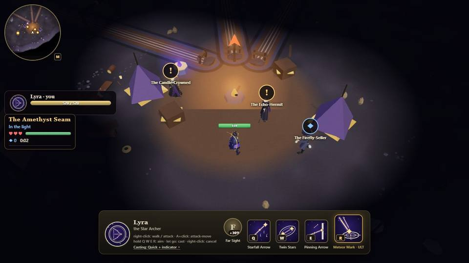

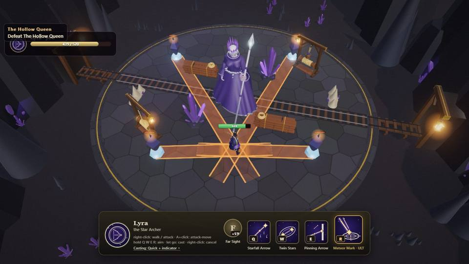

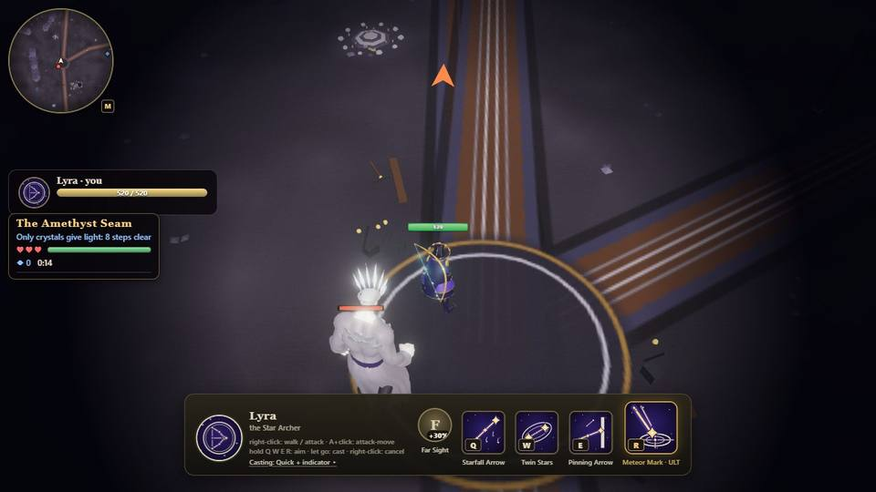

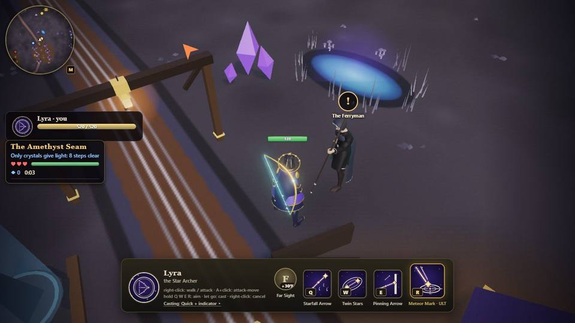

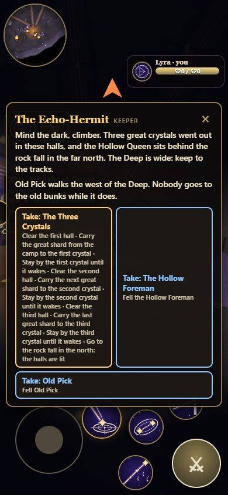
Fixed
- A jetty ran through a stone ridge (the still shore, west): from the landing it crossed dry ground, went through a ridge of rock and only then reached the black water. A jetty now starts past the last rock on its line, so here it begins at the shore and runs out over the water (
src/tower/world/deepDepth.ts; the rock test now sees the ridges too). Checked on all ten Deep floors: only floor 32's jetty moves; nothing on the game's random stream changes. The props probe's "through cover" on this floor: 5 -> 0.

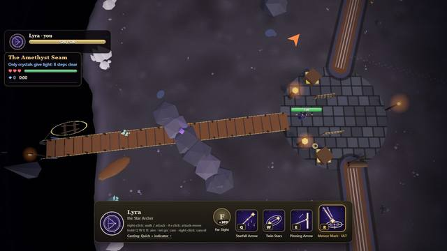

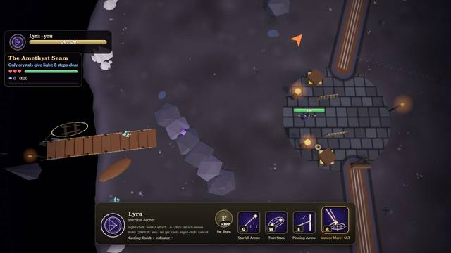

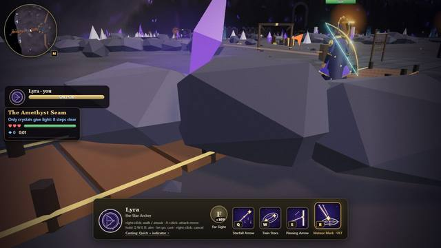

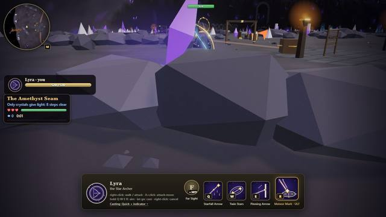
- People's marks showed over the minimap (all floors): a person standing at the top-left of the screen had its "!" and name drawn over the minimap. The minimap now lies over the world's marks (and still under the cards, the banner and the big map;
src/tower/world/map.ts).

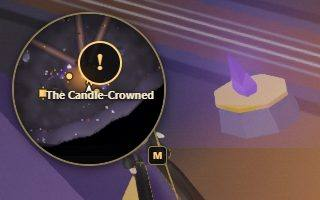

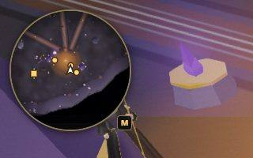
Left (in the list for the user)
- The rival is a hero, and it can be the hero you play: the bot played Lyra and met "I am Lyra" in Lyra's gallery (every floor with a rival can do this, in all chapters).

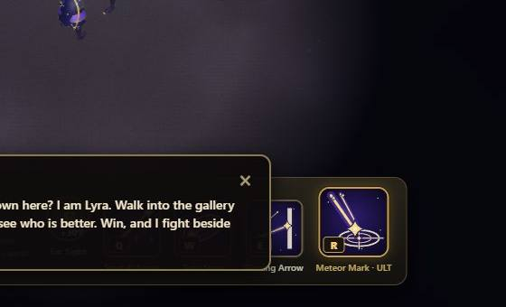
Floor 33 · The Echo Galleries
Played through: cleared with four stars in 1165 s of game time, no lives lost, nothing stuck, no errors (every quest, Bram's gallery, six waystones, six caches, the lore stone, the Dark Vault, the Lamp Warden, Mortis at the gate). Reachable: all spots. Read: the names and lines fit; the ruler is the codex's Lamp Warden, on the lamp model. Props: nothing in the air or through cover on walkable ground. Six violet crystals at the cave's foot stand 0.1 to 1.1 m off the slope behind them; looked at from the game's camera they are not seen (left). Frames: about 3.5 ms at the camp and in the busiest fight. Phone: usable.

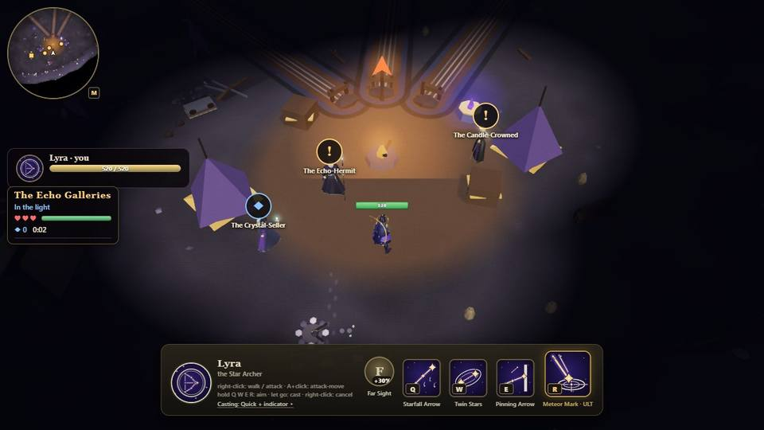

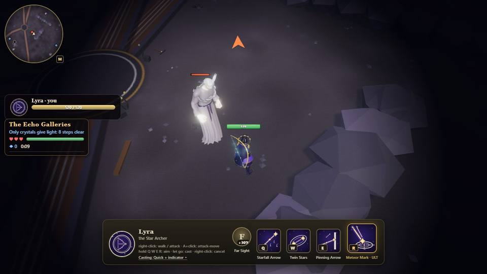

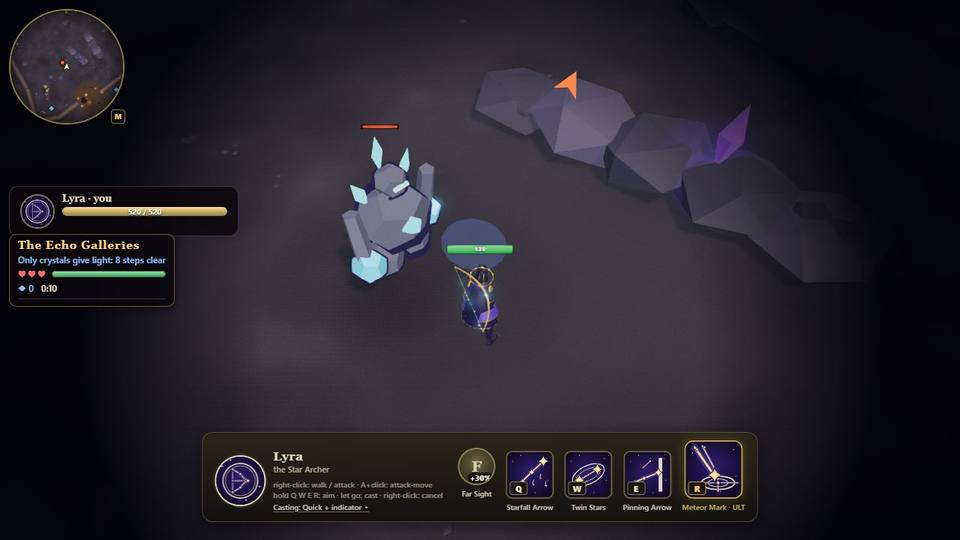

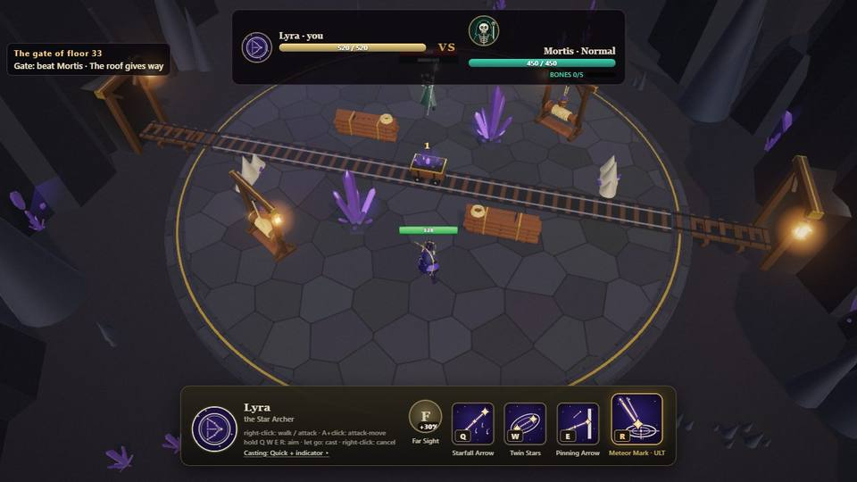

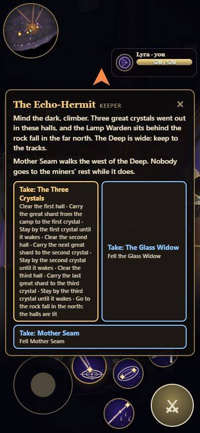
Fixed
- Nothing on this floor of its own (the map's names and the minimap from floors 31 and 32 apply here too).
Floor 34 · The Black Water
Played through: cleared with four stars in 1232 s of game time, no lives lost, nothing stuck, no errors (the Sleeping Halls, the Lampless and Grey Tallow, the Lost Lantern, the Survey Lamp, Bring Sorrel Up, Marin's gallery, every waystone, cache and the lore stone, the Dark Vault, the Glass Abbot, Cantor at the gate). Reachable: all spots. Read: the names and lines fit; the ruler is the codex's Glass Abbot, on the seam model. Frames: about 9 ms at the camp and in the busiest fight.


Looked at, left
- Crystals in the north wall's arch (the opening onto a second cavern, every Deep floor): its violet crystals stand on the opening's sill, 0.9 to 1.7 m over the cave floor in front of it; from a camera set low they seem to hang in the dark. From the game's camera they read as part of the arch.

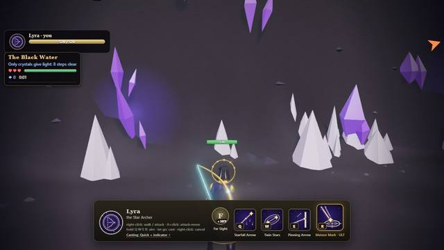
Left (in the list for the user)
- On a phone, a person's mark lies over the floor's panel (the Candle-Crowned's "!" and name over "The Black Water / In the light"). The marks and the panel are both the HUD's (
src/tower/world/hud.ts, not mine to change in this round): the fix is the panel's layer 6 -> 8, as the minimap got on floor 32.

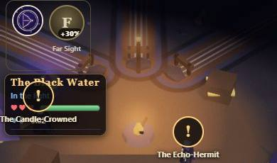
Floor 35 · The Lamp Road
Played through: cleared with four stars in 1280 s of game time, no lives lost, nothing stuck, no errors (the Three Crystals, the Stone Choir and Cinder Jack, the Lost Lantern, the Survey Lamp, Bring Abel Up, Nyx's gallery, every waystone, cache and the lore stone, the Dark Vault, Mother of Echoes, Hank at the gate). Reachable: all spots. Read: the names and lines fit; the ruler is the codex's Mother of Echoes. Frames: about 8 ms at the camp, 11 ms in the busiest fight (one slow frame of 97 ms at the camp as the floor's shaders came in).


Fixed
- Crystals hanging off the cave walls (every Deep floor, 31 to 40): each cluster of glowing crystals on the walls is a big crystal and a small one 0.7 m beside it, and the small one was set at the big one's height; where the wall is steep it hung in the air, up to 2 m (here three of them by the walkable edge in the west). The small one now stands on its own ground (
src/tower/world/deepZone.ts, no new random draws: nothing else moves). The probe's things in the air on the Deep's floors: 31: 250 -> 234, 32: 233 -> 230, 33: 242 -> 229, 34: 247 -> 241, 35: 253 -> 240; those by the walkable edge on floor 35: 6 -> 2 (the arch's keystone 20 m up and one chip). What is left in the air past the edge is the stalactites (by design) and the arch's crystals (floor 34).

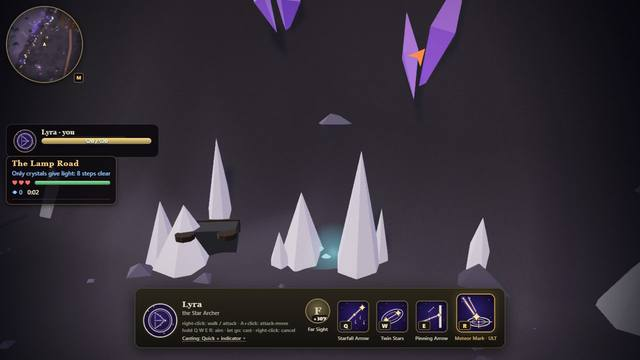

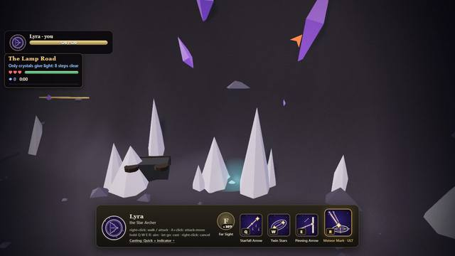
Floor 36 · The Hollow Choir
Played through: cleared with four stars in 1478 s of game time, no lives lost, nothing stuck, no errors (Light the Deep, the Long Dark and Quartz Annie, the Lost Lantern, the Survey Lamp, Bring Abel Up, Wick's gallery, every waystone, cache and the lore stone, the Dark Vault, the Seam King, Gus at the gate). Reachable: all spots. Read: the names and lines fit; the ruler is the codex's Seam King, on the seam model; from here the dark is a step tighter ("7 steps clear"), as written. Frames: about 8 ms at the camp, 9 ms in the busiest fight.


Small, left
- The man to bring up from the shaft is called Abel on floor 35 and on floor 36 too (the generator's name list; the floors are baked, and the name is in the quest's step, so I left it).
Left (in the list for the user)
- A person's mark over the spell bar (the Ferryman's "!" over the W key): the same as floor 34's mark over the floor's panel.

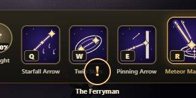
Floor 37 · The Glass Roots
Played through: cleared with four stars in 1340 s of game time, no lives lost, nothing stuck, no errors (Light the Deep, the Last Shift and Brother Flint, the Lost Lantern, the Survey Lamp, Bring Tobin Up, Kaia's gallery, every waystone, cache and the lore stone, the Dark Vault, the Blind Cantor, Vitriol at the gate). Reachable: all spots. Read: the names and lines fit; the ruler is the codex's Blind Cantor (one of the hundred of the choir), on the lamp model. Props: nothing in the air or through cover on walkable ground (the arch's keystone aside). Frames: about 7 ms at the camp, 8 ms in the busiest fight. Phone: usable.

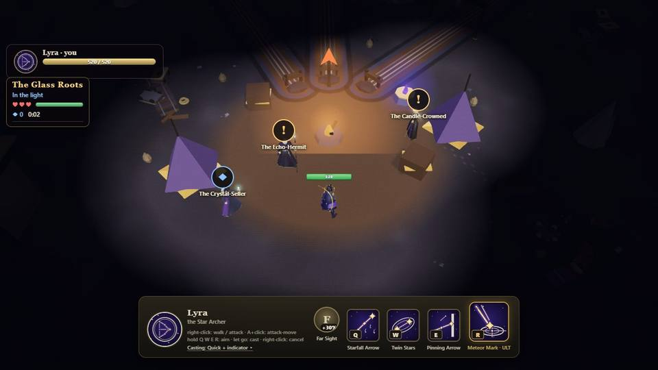

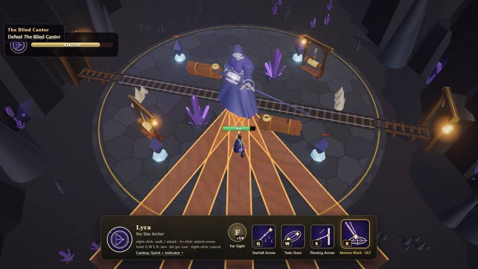

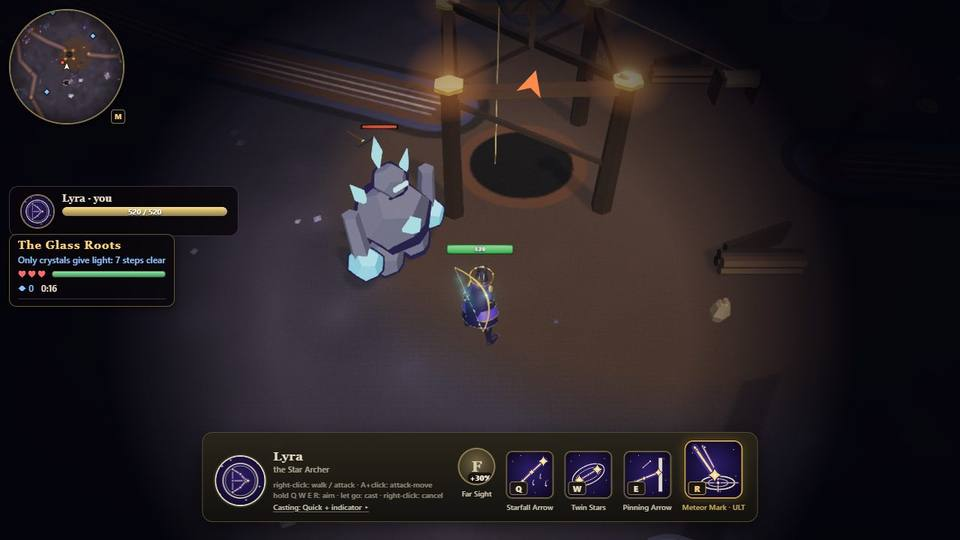

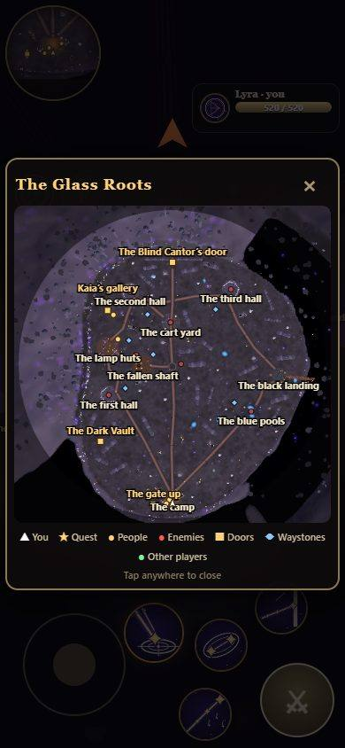
Fixed
- Nothing of its own.
Floor 38 · The Sunless Market
Played through: cleared with four stars in 1281 s of game time, no lives lost, nothing stuck, no errors (Light the Deep, the Ore Bride and Slate-Eyes, the Lost Lantern, the Survey Lamp, Bring Dunn Up, Sefu's gallery, every waystone, cache and the lore stone, the Dark Vault, the Gem Tyrant, Auriel at the gate). Reachable: all spots. Read: the names and lines fit; the ruler is the codex's Gem Tyrant, on the seam model. Props: nothing in the air or through cover on walkable ground; the light under one side at the edge is the mine entrances' beams against the wall, as on every Deep floor (looked at in the props pass and kept). Frames: about 7 ms at the camp and in the busiest fight.

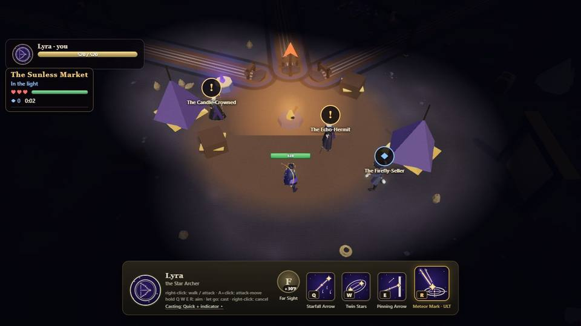

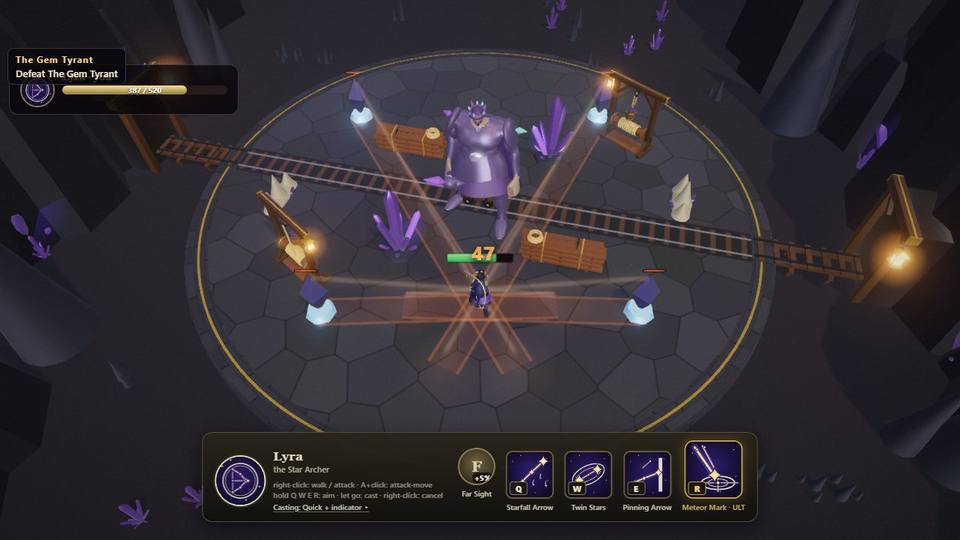

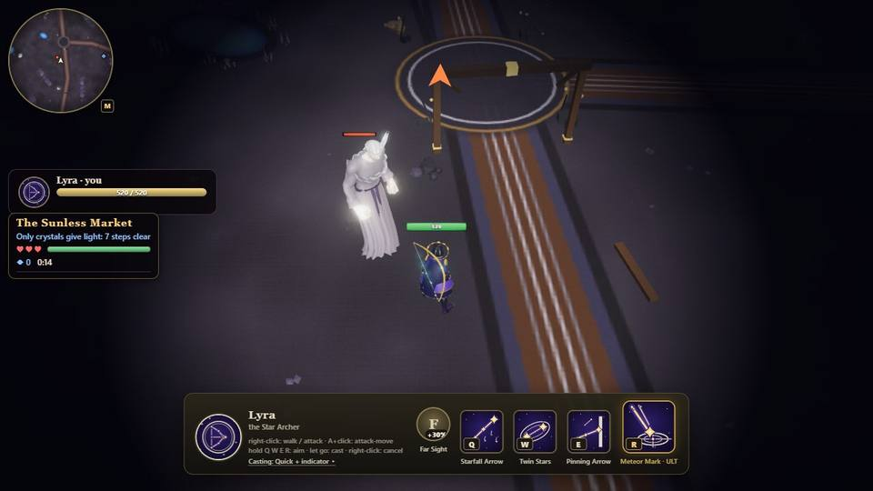

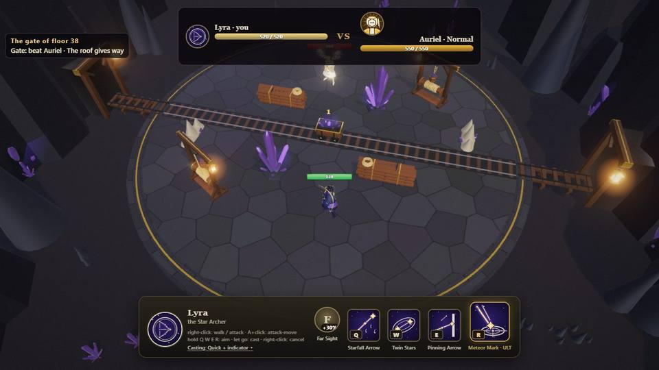
Fixed
- Nothing of its own.
Floor 39 · The Prism Stair
Played through: cleared with four stars in 1374 s of game time, no lives lost, nothing stuck, no errors (the Sleeping Halls, the Night Shift and Widow Cobble, the Lost Lantern, the Survey Lamp, Bring Tobin Up, Silvane's gallery, every waystone, cache and the lore stone, the Dark Vault, the Drowned Lantern, Bo at the gate). Reachable: all spots. Read: the names and lines fit; the ruler is the codex's Drowned Lantern, on the lamp model. Props: nothing in the air or through cover on walkable ground. Frames: about 3 to 4 ms at the camp and in the busiest fight (five enemies).


Small, left
- The miners' stone says the same as floor 31's ("The miners lit the crystals to find their way home...") and the man to bring up is Tobin, as on floors 32 and 37: the generator's short lists. Baked into the floor; left.